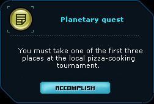
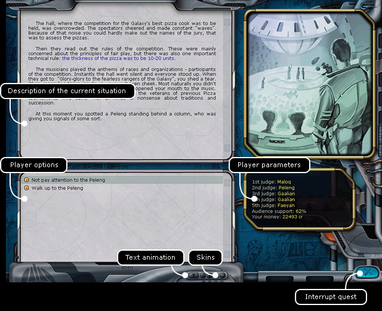

Ranger manual
> Quest screen
|
Ranger manual
> Quest screen
|
| Quest screen  A planet government can task the player with a planetary quest. After landing on the destination planet you will see an invitation window in the bottom right corner of the screen containing a short description of the mission. Press 'Accomplish' to enter the quest mode mode. |
In this mode the screen consists of 4 zones: description of the current situation, variants of player's actions, player's parameters and an associated picture. |

| For player's convenience there is a customization panel of the quest screen at the bottom. You can choose there the color scale (4 buttons "Skins") and enable or disable the animation of texts on the locations. Choosing particular actions the player moves from one situation to another until he completes the quest task or loses. In course of the game the quest parameters don't change. When some parameters (e.g. player's health or time given for bomb disabling) reach critical values, the quest completes. Both a success and a fail of the mission are possible. Completing a quest your character can even die, therefore don't be hurry taking steps. The player can complete the quest via three following means: • successfully finish the quest (completed a mission) • fail a quest (died or fail to complete a mission) • break the mission ahead of time. To break a quest ahead of time: Press the button 'Break quest'. You can return to main mission screen. To restart a quest: Press Rkey. You can return to the planet screen. |